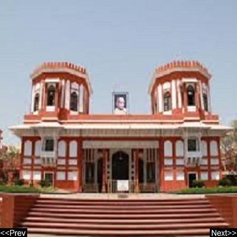

|  |
|
Sardar Vallabhbhai Patel National Memorial Sardar Vallabhbhai Patel National Memorial is a museum and exhibition centre dedicated to Sardar Vallabhbhai Patel at Moti Shahi Mahal, located in Shahibaug, Ahmedabad, Gujarat. Address: Shaibaug, Ahmedabad, Gujarat 380004 Phone: 079 2286 7027 |